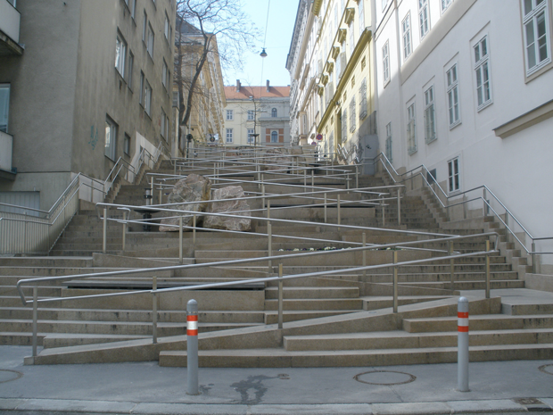

Urban planning is not gender neutral. Many women experience the city differently than men and in many parts of the world, women can’t even go out on their own without being harassed. Women are also usually perceived as belonging in the private (domestic) sphere while men’s roles are in the public sphere. Hence, women are not part of decision-making structures in cities, and this means cities are not designed with women in mind. For example, men and women don’t access the public transportation system in the same way, as women are much more likely to be victims of violence within the infrastructure sector. There may be no lighting on routes used more by women, and public transport may serve some work zones more than others. In Canada, nearly 60% of women surveyed are afraid to walk alone at night as opposed to only 17% of men.
A study in Vienna also discovered that women used public transit more often and made more trips on foot than men. They were also more likely to split their time between work and family commitments like taking care of children and elderly parents. For example, during daylight hours, public spaces are more likely to be used by women spending time in nearby parks, with children, disabled and/or senior citizens. However, those spaces are mainly designed for men’s needs.
Recognizing this, city planners devised a plan to improve pedestrian mobility and access to public transit. Additional lighting was added to make walking at night safer for women. Sidewalks were widened so pedestrians could navigate narrow streets and a massive staircase with a ramp running through the middle was installed near a major intersection to make crossing easier for people with strollers and individuals using a walker or a wheelchair.
This practice is called gender mainstreaming and has been in place in Vienna since the early 1990s. It entails city administrators creating laws, rules and regulations that benefit both men and women equally and the goal is to provide equal access to city resources.
Another example would be Vienna’s network of public parks. Another study, which took place from 1996 to 1997, showed that after the age of nine, the number of girls in public parks dropped off dramatically, while the number of boys held steady. Researchers found that girls were less assertive than boys, so if boys and girls wound up in competition for park space, the boys were more likely to win.
City planners wanted to see if they could reverse this trend by changing the parks themselves. Therefore in 1999, the city began a redesign of two parks in Vienna’s fifth district. Footpaths were added to make the parks more accessible and volleyball and badminton courts were installed to allow for a wider variety of activities. Landscaping was also used to subdivide large, open areas into semi-enclosed pockets of park space. Almost immediately, city officials noticed a change. Different groups of people—both boys and girls, began to use the parks without one group overruling the other.